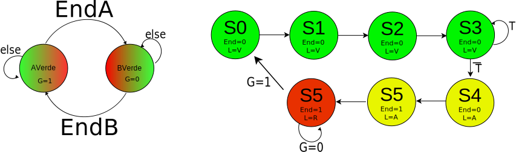
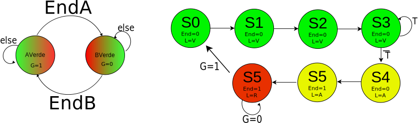

ELO211 Sistemas Digitales
Circuitos secuenciales: otros métodos
Marie González-Inostroza
Clock
Periodo (T): duración de un ciclo del clock
frecuencia (f): cantidad de ciclos por unidad de tiempo f=1/T

Registros
Cuando queremos guardar información de largo N, usamos un grupo de N flipflops que usan el mismo clock
Ejemplo: opciones de codificación de estados
| State | C. binario | C. Gray | C. One-Hot | C. One-Cold |
|---|---|---|---|---|
| S0 | 00 | 00 | 0001 |
1110 |
| S1 | 01 | 01 | 0010 |
1101 |
| S2 | 10 |
11 | 0100 |
1011 |
| S3 | 11 | 10 | 1000 | 0111 |
Se debe elegir una estrategia de codificación
Flip-Flop JK


Máquinas factorizadas
Caso de estudio: Semáforo inteligente modificado
Después de unos meses de evaluación del circuito implementado, en base a su máquina de Moore, la Municipalidad le ha pedido modificar su máquina. En concreto, quieren que los semáforos estén al menos 4 ciclos reloj en cada verde y 2 en amarillo y que no se salte ningún color.

Propuesta de solución con una máquina

Propuesta de solución factorizada


 

Propuesta de solución factorizada opción 2

Actividad 17
Síntesis de máquinas secuenciales factorizadas
Trabajo grupal
Actividad 17
En grupos, obtengan un circuito secuencial que implemente una de las opciones de máquina secuencial planteada.
Utilicen Flip-Flops JK y codificaciones de estado que no sean numeración binaria.
Actividad 17
Planteamiento de una máquina secuencial factorizada
Trabajo grupal
Actividad 16
En grupos, planteen los diagramas de transiciones para le siguiente caso:
Se le ha pedido diseñar una FSM factorizada capaz de controlar una cámara digital. Esta debe encargarse del sistema central de la cámara y enviar señales a los distintos sistemas. La única entrada de control de la cámara es el botón de toma de imágenes. Una vez que se aprieta el botón, debe iniciarse el sistema de auto-enfoque, que permite calcular la distancia a la que está el objeto central. Si se mantiene presionado el botón luego de terminado el enfoque, se debe iniciar el proceso de toma de imagen. La toma de imagen consiste en tomar una imagen durante el tiempo de obturación (varios ciclos de reloj). Una vez concluida la toma de imagen, se debe iniciar el proceso de guardado. Durante este tiempo, la pantalla queda en negro. Luego de terminar la toma de imagen, la cámara está en modo espera. En este caso, la pantalla debe estar activa mostrando la imagen de previsualización. Al concluir, debe sonar un bip! Por 6 tiempos de reloj.